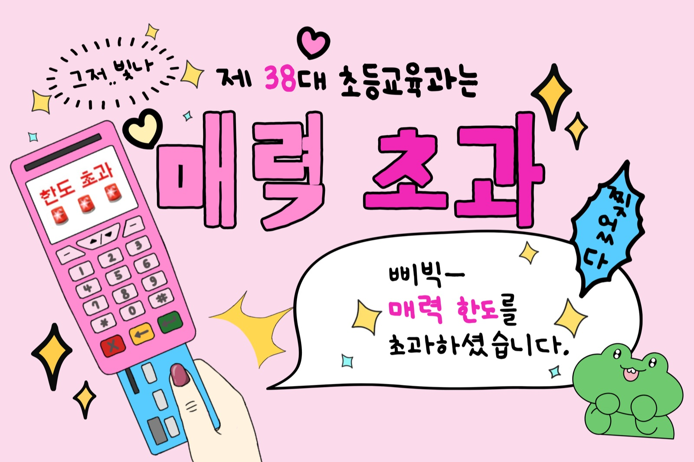
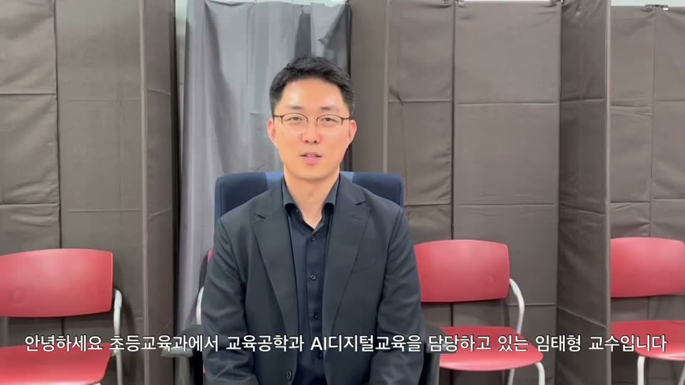
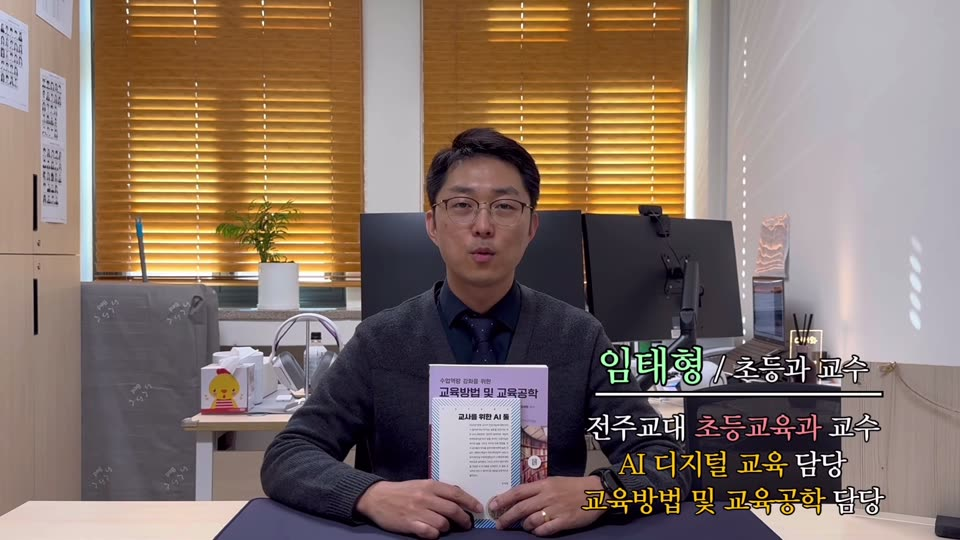
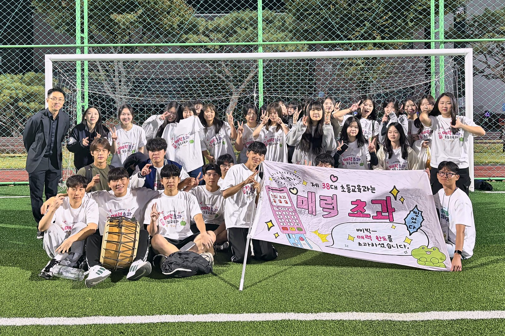

전주교육대학교
초등교육과
교육의 본질을
탐구하고 실천하는 교사
↓ 아래로 넘기기 (발표: → 또는 Space · F 전체화면)
01 선배들이 만든 초등과
23·24학번이 직접 찍은 두 편, 하이라이트 96초. 초등과가 아닌 사람은 누구?

유튜브 준비 중단톡방 대화만 보고 초등과가 아닌 사람 찾기

유튜브 준비 중캠퍼스를 돌며 "당신… 초등교육과죠?"
02 초등과는 뭘 공부해요?
교과 하나가 아니라, 교사가 하는 일 전부를 파고듭니다.
초등교사라면 누구나 마주치는 다섯 가지 질문.
- ?왜 가르칠까교육철학 · 교육사회
- ?무엇을 가르칠까교육과정
- ?어떻게 가르치고 평가할까교육공학 · 교육평가
- ?아이들은 어떻게 자랄까교육심리 · 특수교육
- ?어떻게 도울까상담심리 · 교육행정
03 심화과정 로드맵 2학년 ~ 4학년 · 18학점
필수 6과목 + 선택 3과목(각 택1). 과목을 누르면 설명이 열립니다.
2-1
데이터기반 수업분석과 AI피드백내 수업을 실연하고, AI와 함께 분석
내 수업을 직접 설계해 실연하고, 그 수업을 AI와 함께 분석해 고쳐 봅니다. 이 과정을 거치며 수업을 보는 눈을 기릅니다. 프로그래밍·통계 선수 지식은 필요 없습니다.
2-2
학부모교육학부모와 함께 아이 키우기
교사가 학부모와 어떻게 만나고 함께 아이를 키울지 배웁니다. 매주 반성적 저널을 쓰고 토론하며 학부모교육 프로그램을 직접 구상해 봅니다.
3-1
교사리더십교실과 학교를 바꾸는 교사
리더십 이론을 학교 현장에 적용해 봅니다. 교실과 학교의 변화를 이끄는 교사는 어떤 사람인지 토론과 협동학습으로 탐구합니다.
택1장애학생통합교육 및 교수방법한 교실에서 함께 배우기
한 교실에서 장애 학생과 비장애 학생이 함께 배우는 통합교육의 방법을 익힙니다. 장애 유형별 교수 방법을 실제 사례로 배웁니다.
택1장애학생개별화교육 및 교수설계아이 한 명에 맞춘 IEP
장애 학생 한 명 한 명의 학습 특성에 맞춘 개별화교육계획(IEP)을 세우고, 그에 맞는 수업을 설계하는 법을 배웁니다.
3-2
현대사상과 교사내 교육관 세우기
20세기 교육사조와 포스트모더니즘 등 현대 사상이 '가르침'을 어떻게 바꿔 놓았는지 살핍니다. 영상과 토론으로 내 교육관을 세워 봅니다.
택1학교심리검사아이를 숫자 너머로 읽기
초등 현장에서 쓰는 심리검사의 기본 개념과 종류를 배우고, 직접 실시하고 해석해 봅니다.
택1학교집단상담학급의 힘으로 성장 돕기
집단상담의 원리와 기술을 익히고, 학급 단위 집단 역동을 활용해 아이들의 성장을 돕는 프로그램을 설계합니다.
4-1
교육과정-수업-평가 일체화성취기준에서 평가까지 한 줄로
성취기준에서 출발해 수업을 설계하고 과정중심평가까지 한 줄로 잇는 연습을 합니다. 임용 후 바로 쓰는 수업 설계의 핵심 기술입니다.
4-2
교육개혁론교육개혁의 주체가 되기
지금 우리나라와 세계의 교육개혁이 어디로 가는지 읽고, 교사가 개혁의 주체로 참여하려면 무엇이 필요한지 토론합니다.
택1학습부진아 및 영재교육느린 아이도, 빠른 아이도
학습이 느린 아이와 빠른 아이, 양쪽의 심리적 특성을 이해하고 진단·지도·상담 방법을 사례 연구와 모의수업으로 배웁니다.
택1교수·학습이론과 실제학습이론을 교실에서 써먹기
학습이론, 뇌 기반 학습, 교수 모형을 배우고 실제 교실에서 창의적으로 써먹는 방법을 찾습니다.
+ 4학년: 지도교수와 함께 쓰는 졸업논문(개인 논문, P/F) · 2026학년도 신입생 적용 교육과정 기준
04 아홉 분야, 아홉 명의 교수
연구실은 모두 교육문화관 1·2층. 복도에서 만나면 인사해 주세요.
- 부재율교육평가과정중심평가 · 교육측정
- 은혁기상담심리학교상담 · 사회정서학습
- 정윤경교육철학현대 교육사상 · 학생 주도성
- 최병연교육심리창의성 · 영재교육
- 박종필교육행정학교 운영 · 교육정책
- 서유진특수교육통합교육 · 학습장애 중재
- 이동성교육사회질적연구 · 교사의 삶
- 이림교육과정2022 개정 교육과정 · 통합 교육과정
- 임태형교육공학생성형 AI · 수업영상 분석학과장
05 작은 학과의 1년
교수 아홉 명이 학생 한 명 한 명을 가까이서 봅니다.
- 3월학과 MT
신입생 + 재학생 1박 2일. 학과·선후배를 알아 가고, 지도교수와 개별 면담으로 대학 생활 설계.
- 학기마다개강·종강 모임
교수와 학생이 한자리에. 밥 먹고, 궁금한 거 묻고.
- 2학년학과 특성화 답사
교육현장과 역사를 하루에 돌아보는 답사. 2026 익산(시민역사기록관), 2025 부안(내소사).
- 4학년졸업논문
한 해 동안 지도교수와 함께 내 논문 한 편을 완성해 제출. 발표회 없이 P/F로 심사.
06 이런 학생에게 추천
- "왜 이렇게 가르치지?"라는 질문이 자꾸 떠오르는 학생
- 과목 하나보다 아이의 마음과 성장 과정에 더 관심이 가는 학생
- 학교와 교육 제도를 바꾸는 일에 참여하고 싶은 학생
졸업 후에는
대부분 초등교사로 임용됩니다. 초등과의 공부는 교실에 선 뒤에 더 빛을 발합니다.
- 수업 교과서·평가 문항 개발, 수업 연구, 에듀테크·AI교육
- 아이 학교상담, 통합교육 → 교육대학원에서 전문상담교사·특수교사 자격 도전
- 학교 장학사·교육연구사 같은 교육전문직, 교육정책 연구
07 자주 묻는 질문
궁금한 질문은 아래 버튼을 눌러보세요. 답이 펼쳐집니다.
교과 심화가 아니라서 임용시험에 불리하지 않나요?
아닙니다. 초등 임용시험은 어느 심화과정을 했든 모두 같은 시험을 보고, 범위도 초등 전 교과의 교육과정입니다. 오히려 1차 교육학 논술은 초등과에서 배우는 내용과 바로 이어지고, 2차 수업 실연은 2학년 때부터 해 보는 수업 설계·분석과 맞닿아 있습니다.
졸업논문을 써야 한다던데, 부담되지 않나요?
생각보다 작습니다. 4학년 1학기에 관심 있는 교육 문제로 주제를 정하고 지도교수가 배정되면, 한 해 동안 교수님과 작은 연구 하나를 완성합니다. 2학기에 제출하면 P/F로 심사합니다. 따로 발표회는 없습니다. 점수 경쟁이 아니라 내 질문 하나를 끝까지 따라가 보는 경험입니다.
데이터·AI로 수업을 분석하는 과목, 컴퓨터를 잘해야 하나요?
아니요. 프로그래밍이나 통계를 전제로 하지 않습니다. 내 수업을 스스로 설계해 실연해 보고, 그 수업을 AI와 함께 분석하며 무엇이 잘됐고 무엇을 고칠지 찾아봅니다. 이 과정을 거치며 수업을 보는 눈을 기릅니다. 도구 사용법은 수업 안에서 함께 배웁니다.

삐빅—
매력 한도를
초과하셨습니다.
초등교육과에서 기다리겠습니다.
초등교육과 사무실 교육문화관 교수연구동 1층 106호 063-281-7181 · ele@jnue.kr 학교 홈페이지 학과 소개 ↗